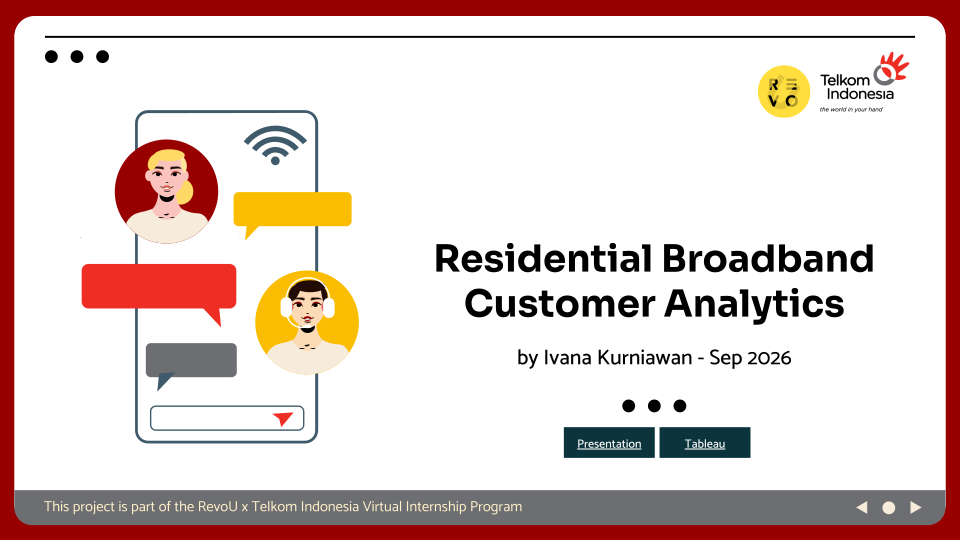
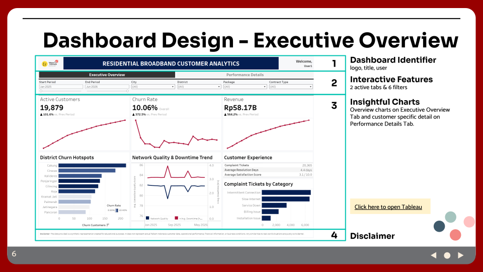
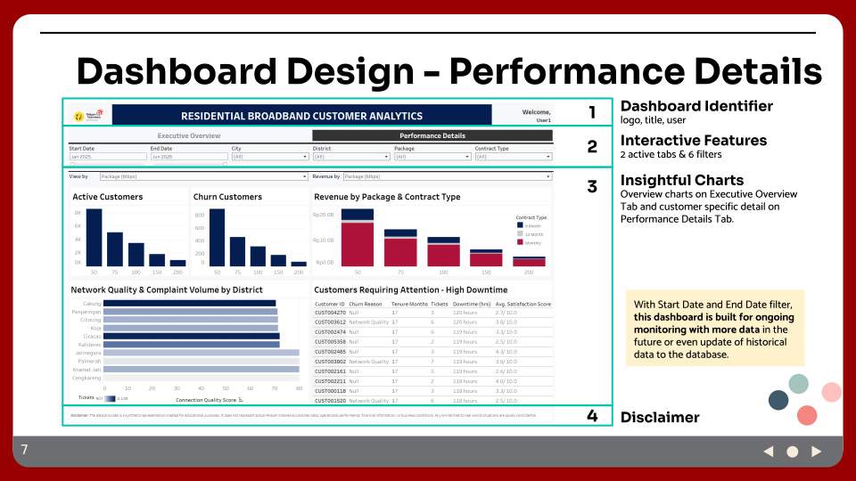
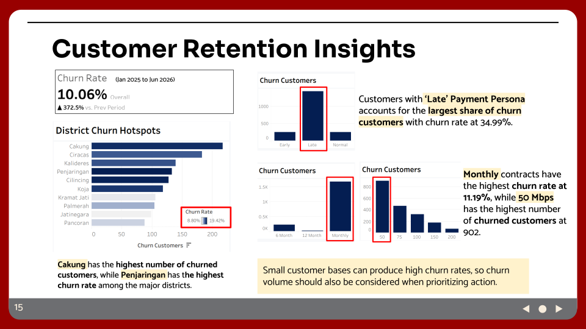

Residential Broadband Customer Analytics
Built an interactive Tableau dashboard to identify customer churn hotspots, service issues, and retention opportunities across districts, customer segments, and broadband packages.

Project Overview
Summary / Context
Telkom Indonesia's residential broadband business needed better visibility into customer churn, service quality, revenue, and complaints across DKI Jakarta.
Goals
Identify where churn and service issues are concentrated and support targeted retention and service-improvement actions.
Process
Validated the raw data, defined business metrics, analyzed customer, revenue, network, and complaint patterns, then built an interactive Tableau dashboard for executive and operational monitoring.
Output
Delivered an interactive dashboard showing churn hotspots, customer segments, revenue performance, network quality, and complaint patterns. The analysis highlighted Cakung, Ciracas, and Penjaringan as key areas for further investigation, while monthly contracts and 50 Mbps customers emerged as important retention segments.
Key Responsibilities
- Validated 20,000 customer records and identified inconsistencies in churn, join, and activation dates.
- Defined KPIs and metrics for customer, revenue, network, complaint, and churn analysis.
- Analyzed churn patterns across districts, contract types, packages, and customer personas.
- Built executive and operational Tableau views and translated findings into targeted retention actions.
Tools & Methods
Tools
Methods
Recommendations
- Prioritize high-churn districts: Investigate areas where high churn overlaps with poor network quality and heavy complaint volume.
- Target monthly contracts: Identify high-risk monthly customers and test targeted retention offers, including longer-term contract incentives.
- Fix recurring connection issues: Prioritize intermittent connection and slow internet in high-complaint districts and track satisfaction after improvements.
- Protect the 50 Mbps base: Investigate whether churn is linked to service quality, price/value perception, or customer profile before designing targeted actions.
Project Gallery



Disclaimer
The data provided is a synthetic representation created for educational purposes. It does not represent actual Telkom Indonesia customer data, operational performance, financial information, or business conditions. Any similarities to real-world situations are purely coincidental.